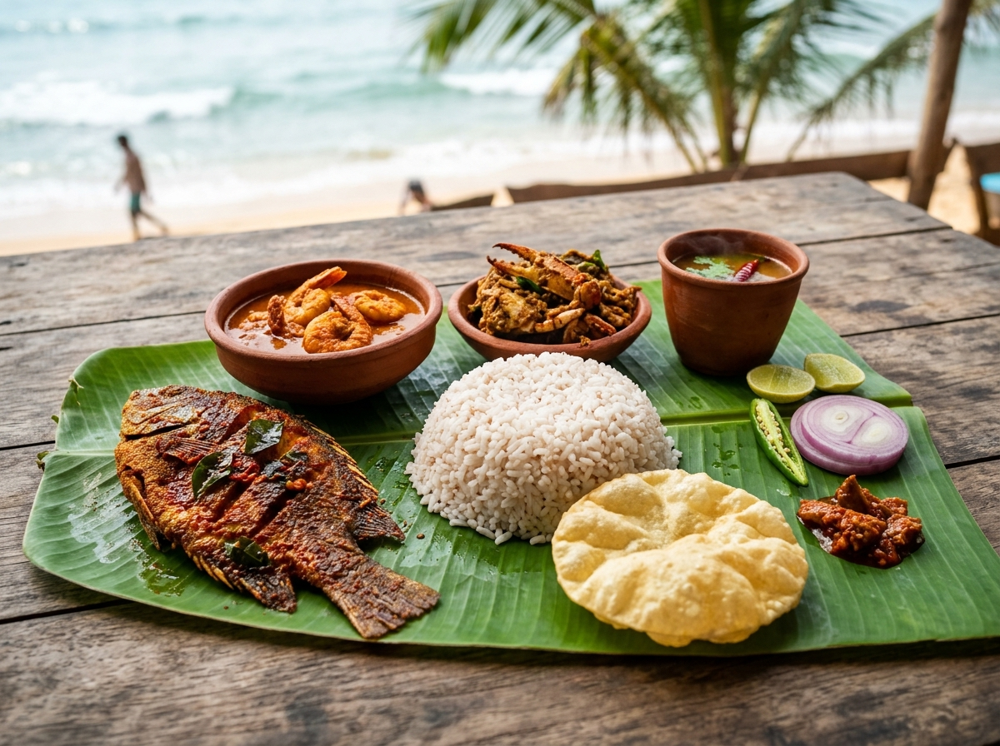

Where the catch of the day becomes the meal of a lifetime.
Ravi has been cooking seafood since he was twelve, learning from his grandmother's recipes right here on the Velugu Cove shore. Today, his open-air kitchen is the heartbeat of the village — fishermen drop off the morning catch, and by noon the aromas of turmeric, curry leaves, and roasting fish fill the air.
There's no fancy décor — just fresh food, honest prices, and a view of the waves. That's exactly how Ravi likes it.
| Dish | Price | Notes |
|---|---|---|
| 🐟 Fish Thali (Signature) | ₹250 | Rice, fish curry, fry, rasam, pickle, papad — the full experience |
| 🦐 Prawn Curry | ₹300 | Coconut-based gravy with jumbo prawns — served with steamed rice |
| 🦀 Crab Roast | ₹350 | Spicy masala roast — messy, delicious, worth every bite |
| 🐙 Squid Fry | ₹200 | Crispy, golden, tossed in curry leaves and chilli |
| 🥥 Coconut Rice | ₹80 | Fragrant rice with fresh grated coconut — perfect side |
| 🍦 Kulfi | ₹60 | House-made mango or cardamom kulfi to finish |
* Prices are approximate. Vegetarian options (paneer thali, dal fry, veggie fried rice) also available daily.

We're on Beach Road, right next to the old lighthouse. Open 11:00 AM to 10:00 PM — call, get directions, or message Ravi on WhatsApp!
Roll out of bed, walk to Ravi's — Lakshmi's homestay is just around the corner.
🏠 Sea Breeze Homestay